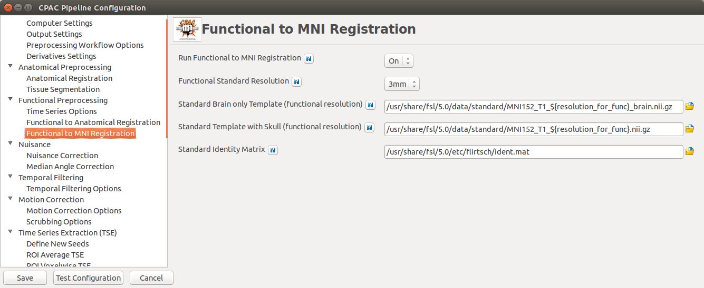

Functional Preprocessing¶
Timeseries Options¶

startIdx and stopIdx¶
Users wishing to discard the first few volumes of a scan (to facilitate stable magnetization) can specify a starting volume here:
# Ignore volumes before this timepoint
# Options are an integer or None (defaults to beginning of timeseries)
startIdx = 0
Users can also chose to ignore volumes after a specific timepoint:
# Ignore volumes after this timepoint
# Options are an integer or None (defaults to end of timeseries)
stopIdx = None
TR¶
If the actual TR used during scanning is different than what is specified in the image header, you can specify that value here:
# Specify a TR (in seconds) other than what is listen in image headers
# Options are a number or None (defaults to header information)
TR = None
Functional to Anatomical Registration¶

- Run Functional-to-Anatomical Registration - [On, Off]: Register the functional timeseries and functional mean images to the T1 anatomical images.
- Using BB Register - [On, Off, On/Off]: Use Boundary-Based Registration in the functional-to-anatomical registration process. This uses the anatomical segmentation outputs to improve the co-registration of functional images to the anatomical. However, this may not be the best option if your anatomical images feature low contrast, resulting in segmentation which may not be of high quality.
- Boundary Based Registration Scheduler - [path]: Standard FSL 5.0 Scheduler used for Boundary Based Registration. It is not necessary to change this path unless you intend to use non-standard MNI registration.
- Use as Functional-to-Anatomical Registration Input - [Mean Functional, Selected Functional Volume]: Choose whether to use the mean of the functional/EPI as the input to functional-to-anatomical registration or one of the volumes from the functional 4D timeseries that you choose.
- Functional Volume to Use as Input (Selected Functional Volume only) - [integer]: Only for when ‘Use as Functional-to-Anatomical Registration Input’ is set to ‘Selected Functional Volume’. Input the index of which volume from the functional 4D timeseries input file you wish to use as the input for functional-to-anatomical registration.
Functional to Standard Registration¶

- Run Functional to MNI Registration - [On, Off]: Register functional images to a standard MNI152 template. This option must be enabled if you wish to calculate any derivatives.
- Functional Standard Resolution - [1mm, 2mm, 3mm]: The resolution (in mm) to which functional images are transformed during registration.
- Standard Brain only Template (functional resolution) - [path]: Standard FSL Skull Stripped Template. Used as a reference image for functional registration.
- Standard Template with Skull (functional resolution) - [path]: Standard FSL Anatomical Brain Image with skull.
- Standard Identity Matrix - [path]: Matrix containing all 1’s. Used as an identity matrix during registration. It is not necessary to change this path unless you intend to use non-standard MNI registration.